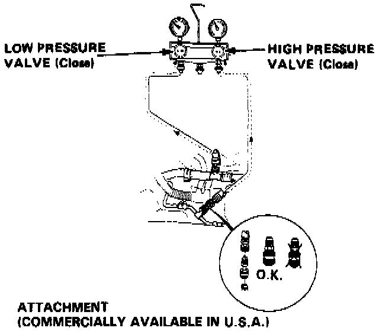
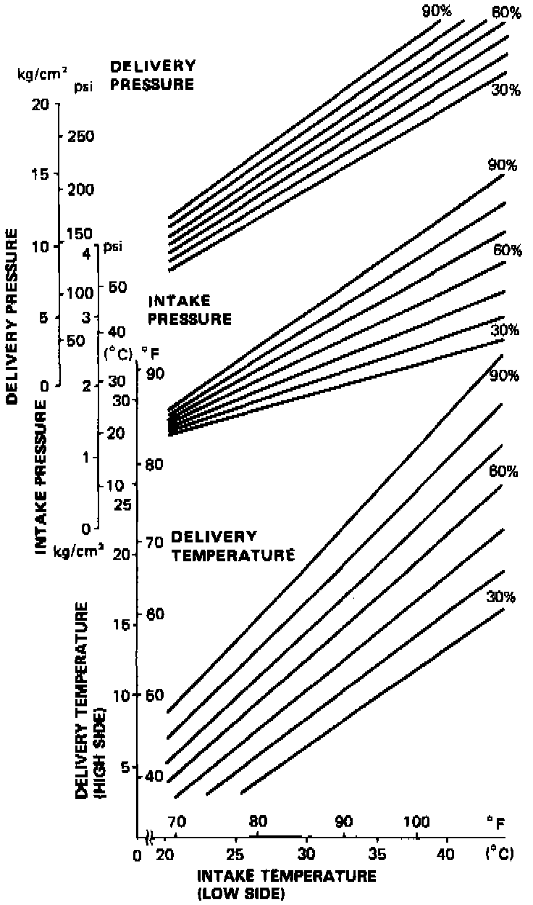

System Performance Test
PERFORMANCE TESTThe performance test will help determine if the air conditioning system is operating within specifications.

1. Connect gauges as shown.
2. Insert a thermometer in the vent outlet. Determine the relative humidity and ambient air temperature by a portable weather station or calling the local weather station.
3. Test conditions:
- Avoid direct sunlight.
- Open engine hood.
- Open front doors.
- Set the temperature control dial to max cold and push the VENT and fresh air buttons.
- Turn the fan switch to MAX.
- Run the engine at 1,500 RPM.
- No driver or passengers in vehicle.
4. After running the air conditioning for 10 minutes under the above conditions, read the delivery temperature from the thermometer in the dash vent and the high and low system pressure from the A/C gauges.

5. To complete the charts:
- Mark the delivery temperature along the vertical line.
- Mark the intake temperature (ambient air temperature) along the bottom line.
- Draw a line straight up from the air temperature to the humidity.
- Mark a point one line above and one line below the humidity level. (10% above and 10% below the humidity level)
- From each point, draw a horizontal line across to the delivery temperature.
- The delivery temperature should fall between the two lines.
- Complete the low side pressure test and high side pressure test in the same way.
- Any measurements outside the lines may indicate the need for further inspection. Refer to Pressure Test Chart for troubleshooting.